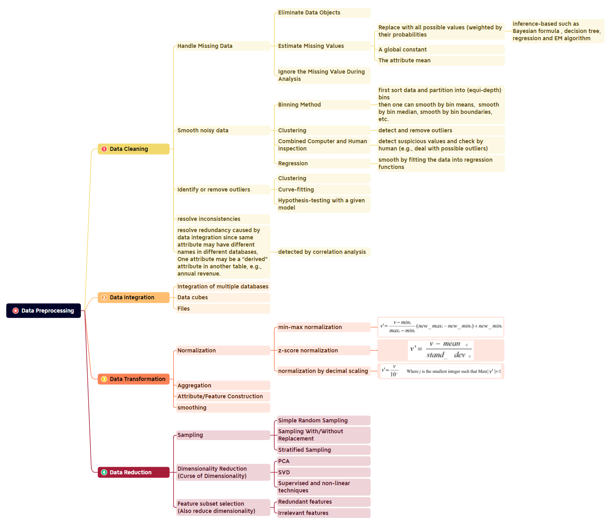
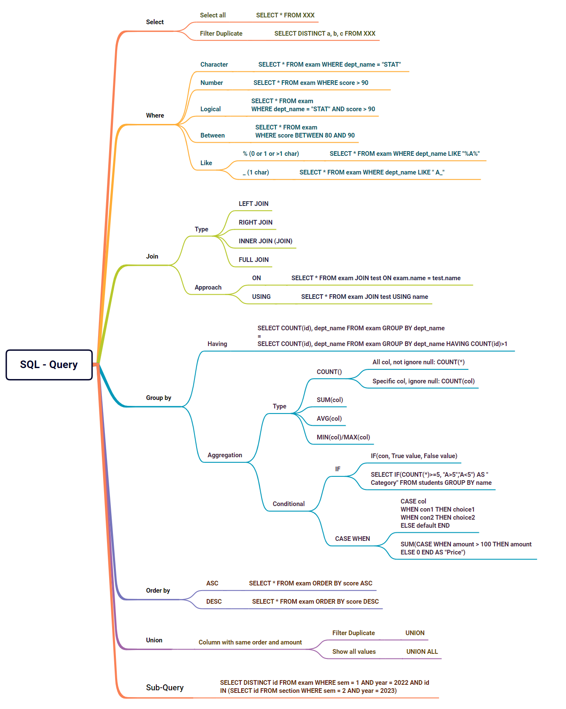

Useful Mindmap for Quick Check
1 Data Preprocessing
1.1 Mind Map

1.2 Implementation Example
Airbnb price (Basic) & Loan Default (Advanced)
2 SQL
2.1 Query Fundamental

2.2 Quick Check
窗口函数
row_number() 123 rank() 113 dense_rank() 112
count
count(1)、count()与 count(列名)的执行区别 count()：会返回行数，包含 NULL。 count(单列)：返回特定列的值具有的行数，不包含 NULL。 count()-count(单列)=NULL 的数量 count()和 count(1)可以近似看成 一样的。 只能 COUNT(*)或者单列，不能 COUNT 两个或两个以上的列。
UNION 和 UNION ALL 的区别
UNION：在进行表求并集后会去掉重复的元素， 所以会对所产生的结果集进行排序运算，删除重复的记录再返回结果。 UNION ALL：只是简单地将两个结果集合并后就返回结果。因此，如果返回 的两个结果集中有重复的数据，那么返回的结果就会包含重复的数据。 SELECT * FROM test1 UNION SELECT * FROM test2
行列转换
行转列 （聚合函数+case when） SELECT name, MAX(CASE WHEN subject='语文' THEN score ELSE 0 END) AS "语文", MAX(CASE WHEN subject='数学' THEN score ELSE 0 END) AS "数学" FROM student GROUP BY name
列转行 SELECT NAME, '语文' AS subject, MAX("语文") AS score FROM student1 GROUP BY NAME UNION SELECT NAME, '数学' AS subject, MAX("数学") AS score FROM student1 GROUP BY NAME
计算连续活跃/登录 (计算连续活跃 2 天及以上的用户) select user_id, day_group, count() as continous_days from( select , date_sub(active_day, rnk) as day_group from ( select , row_number() over (partition by user_id order by active_day) as rnk from ( select user_id, distinct cast(active_time as date) as active_day from user_active ) a )b )c group by user_id, day_group having count() >= 2
date_format('2021-01-01', '%Y%m%d')
思路 1. 用户活跃日期去重：select distinct cast(active_time as date) 2. 窗口函数按日期排序 row_number() over(partition by user_id order by active_day) as rnk 3. 做差确定连续日期的分组 date_sub(active_day, rnk) as day_group 4. 根据分组列计算连续天数 Group by having count(*)>=2
次日留存率 select d.a_day, count(distinct d.uid) as '活跃用户数', count(distinct case when d.day_diff=1 then d.uid else null end) as '次日留存数', count(distinct case when day_diff=1 then d.uid else null end) /count(distinct d.uid) as '次日留存率', count(distinct case when d.day_diff=3 then d.uid else null end) as '3 日留存数', count(distinct case when day_diff=3 then d.uid else null end) /count(distinct d.uid) as '3 日留存率' from( select *, date_sub(b_day,a_day) as day_diff from ( select distinct a.uid, a.actve_day as a_day, b.active_day as b_day from active_log as a left join active_log as b on a.uid = b.uid ) ) d group by d.a_day
第 1 步：自连接进行日期连接 第 2 步：计算时间间隔 第 3 步：计算次日、7 日留存数
2021年11月每天新用户的次日留存率 select t1.dt,round(count(t2.uid)/count(t1.uid),2) uv_rate from (select uid ,min(date(in_time)) dt from tb_user_log group by uid) as t1 -- 每天新用户表 left join (select uid , date(in_time) dt from tb_user_log union select uid , date(out_time) from tb_user_log) as t2 -- 用户活跃表 on t1.uid=t2.uid and t1.dt=date_sub(t2.dt,INTERVAL 1 day) where date_format(t1.dt, '%Y-%m') = '2021-11' group by t1.dt order by t1.dt
计算累计指标 (统计出每个商品截至每个月的累积销量) select product_id,sale_month,month_quantity, sum(month_quantity) over(partition by product_id order by sale_month) as month_all from( select product_id, date_format(sale_date,'%Y-%m') as sale_month, sum(quantity) as month_quantity from sale_info group by product_id ) as a
3 Data Anlayst Quick Check
中心极限定理： 有一个总体数据，如果从该总体数据中随机抽取若干样本，重复多次，每次抽样得到的样本量统计值(比如均值)约等于与总体的统计值(比如均值) ，而且重复多次以后会得到多个统计值，这些统计值会呈正态分布。 作用：用样本估计总体/根据总体的均值和标准差判断某样本是否属于总体。
假设检验：指从对总体参数所做的一个假设开始，然后搜集样本数据，计算出样本统计量，进而运用这些数据测定假设的总体参数在多大程度上是可靠的，并做出承认还是拒绝该假设的判断。 如果对参数有所了解，但 怀疑猜测需要证实时，即验证参数的准确性。
两类错误 第一类错误a 叫弃真错误或显著性水平，即原假设为真时却被我们拒绝的概率（漏杀） 第二类错误B 叫采伪错误，即原假设为伪我们没有拒绝的概率。（误杀） 第一类错误更不能接受，宁可误杀不能错杀（比如产品以为有效果，但更新后没效果，所以被漏杀了） power:1-B 避免犯第二类错误的概率，power大，需要样本量多 在一定样本量的情况下，减小一类错误必然会增大另一类错误 在实践中我们一般会优先控制第一类错误，因为原假设是非常明确的
置信区间和置信度: 置信度：样本落在置信区间内的概率（成年男性的平均体重有85%概率落在50kg-100kg） 置信区间：给定置信水平下，样本的统计量对总体参与进行估计得到的一个区间( 50kg-100kg)
非参数统计: 对总体的分布不作假设/仅作非常一般的假设 优点：假设条件少，适用范围广，思想与运算较简单，可以与很快计算结果 缺点：计量水准低，与参数统计相比效果差，在给定的a下检验，第二类错误Beta大一些 对于大样本，如果不采用合适的近似，计算会变得很复杂
多重共线性：多重共线性（Multicollinearity）是指线性回归模型中的解释变量之间由于存在精确相关关系或高度相关关系而使模型估计失真或难以估计准确。 如何检验： 方差膨胀因子(Variance inflation factor): VIF = 1/（1-Ri^2） Max(VIF) > 10 or Mean(VIF) > 1 -> Multicollinearity 解决共线性的方法有：剔除变量，LASSO回归，岭回归等
频率学派： 频率学派强调从数据的角度出发，将参数看作是固定但未知的常数，它们不具有概率分布。频率学派的方法主要集中在估计参数的点估计（point estimation）和置信区间（confidence interval）。频率学派认为，参数是一个真实但未知的量，可以通过样本数据来进行估计，从而得到关于参数的统计性质。
贝叶斯学派： 贝叶斯学派则从概率的角度出发，将参数视为一个随机变量，具有概率分布。在贝叶斯统计中，参数的不确定性是通过概率分布来表示的。贝叶斯学派引入了先验分布（prior distribution）来表示参数的不确定性，然后通过贝叶斯定理将先验与数据相结合，得到参数的后验分布（posterior distribution）。这种方法允许在估计参数时，同时考虑数据和领域知识，从而更好地处理不确定性。 优点：实验所需样本量更少，不用提前预估样本量和实验时长，快速实现产品迭代；实时性更强，更具有解释下。
总结起来，频率学派将参数视为固定但未知的常数，侧重于点估计和置信区间；而贝叶斯学派将参数视为随机变量，具有概率分布，侧重于概率分布的更新与推断。不同学派的方法在实践中有各自的应用场景和优劣势，研究者和实践者可以根据问题的性质和需求来选择适合的统计学方法。
费米问题: 按照逻辑思维去拆解复杂问题
指标异动： DAU下降如何分析 1.核实数据真实性；2.各维度细致拆解；3.内部因素（分部门纠因）4.外部因素（环境影响） GMV = UV（独立访问数）用户转换率（漏斗分析）订单均价
指标体系搭建： 指标和维度区别与联系 北极星指标（第一关键指标），虚荣指标（累计数量，只涨不跌） 定义：多个相关指标的有机结合 建立：根据业务特点和生命周期选择北极星，将其逐层拆解（流程/时间区域/公式），从上（战略）至下（KPI），从下至上（叶子指标向上汇总乘总体指标）
辛普森悖论: 细分结果与整体结果相违背（量与质是不等价的） 原：男20点击1 女100点击99，点击率 100/120； 现：男100点击6，女20点击20，点击率26/120； 如何避免：斟酌个别分组的权重，以一定的系数去消除以分组资料基数差异所造成的影响，同时必需了解该情境是否存在其他潜在要因而综合考虑。
Updating In Progress...